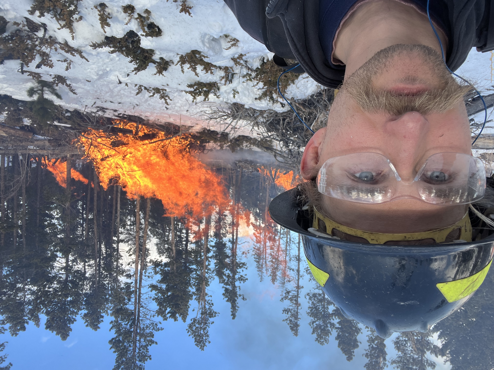

Habitat Suitability: Andropogon Gerardii
GBIF
Grassland Boundaries
Soil Urls (Sheyenne)
Soil Urls (Curlew)
Soil Tiles
Elevation (Sheyenne)
Elevation (Curlew)
MacaV2 climate scenario 1
MacaV2 climate scenario 2
MacaV2 climate scenario 3
Fuzzy Logic Model
Fuzzy Logic Model
Cold, Dry Scenario
Cold, Wet Scenario
Hot, Dry Scenario
Hot, Wet Scenario
Plots